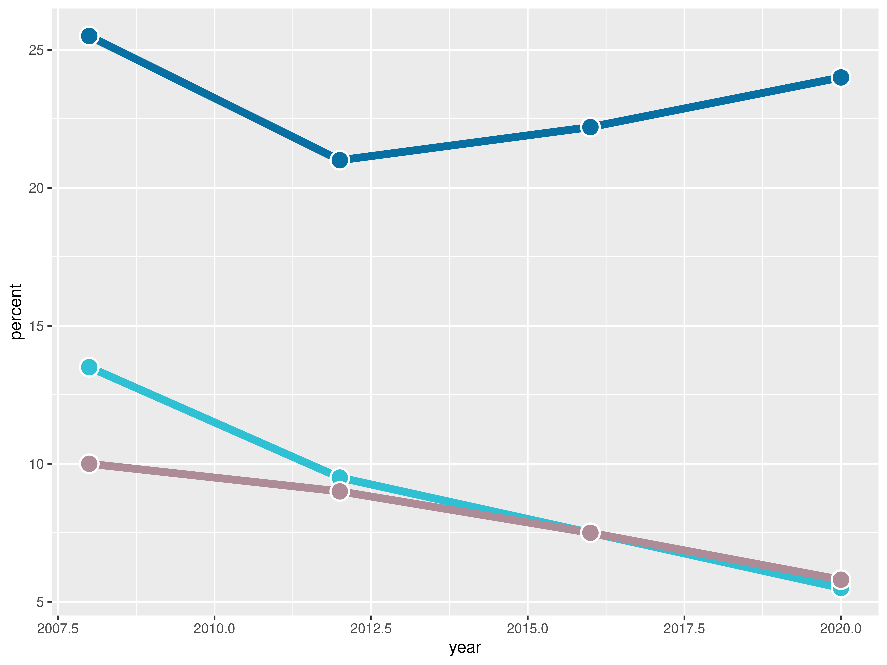
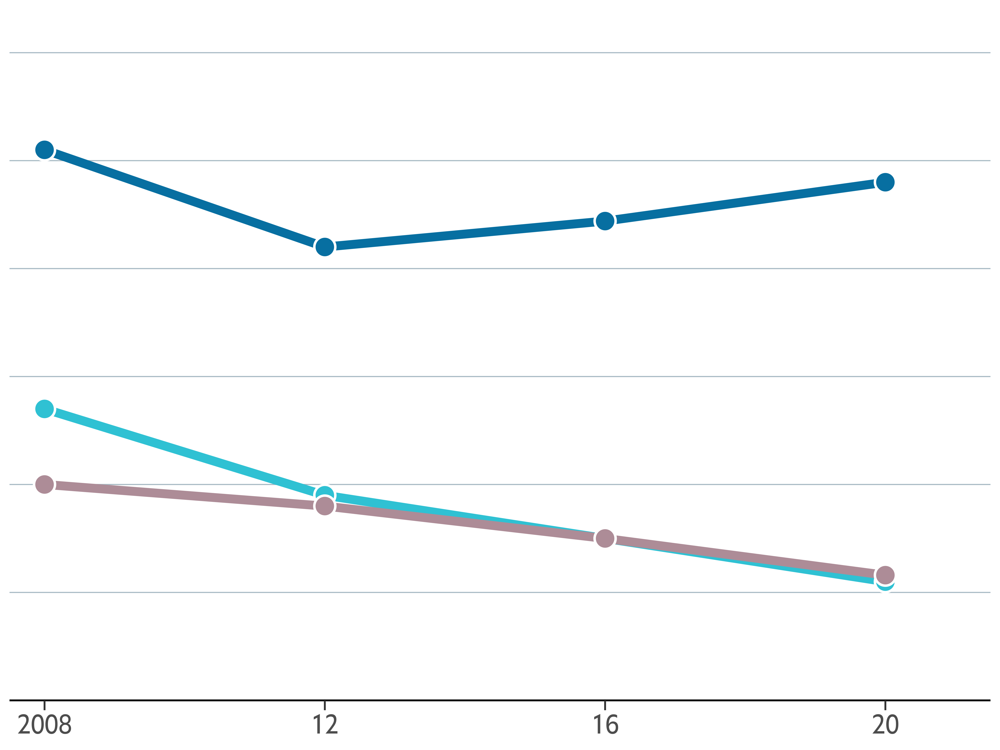
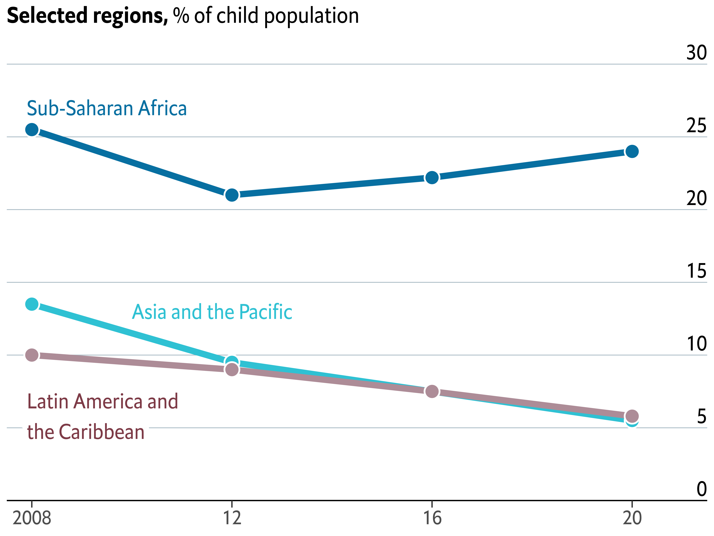
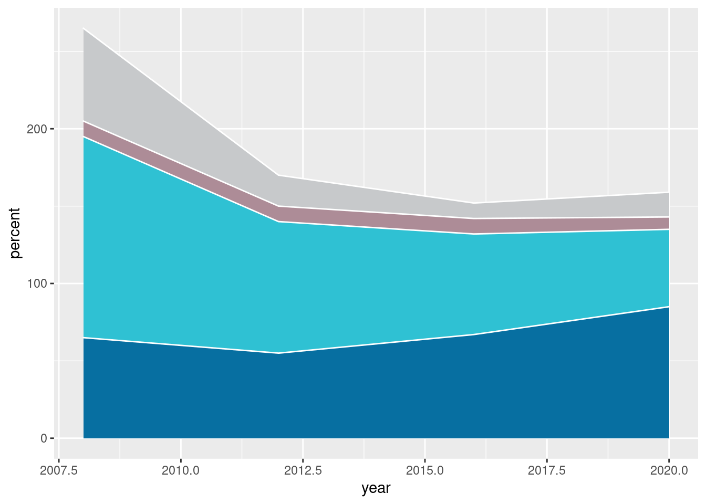
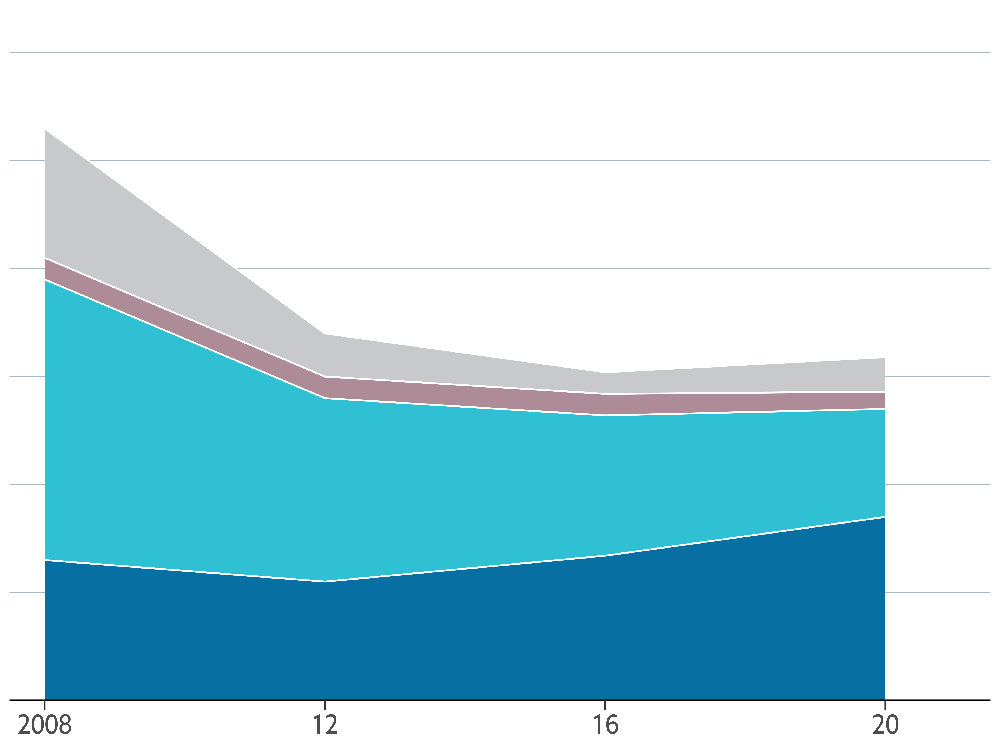
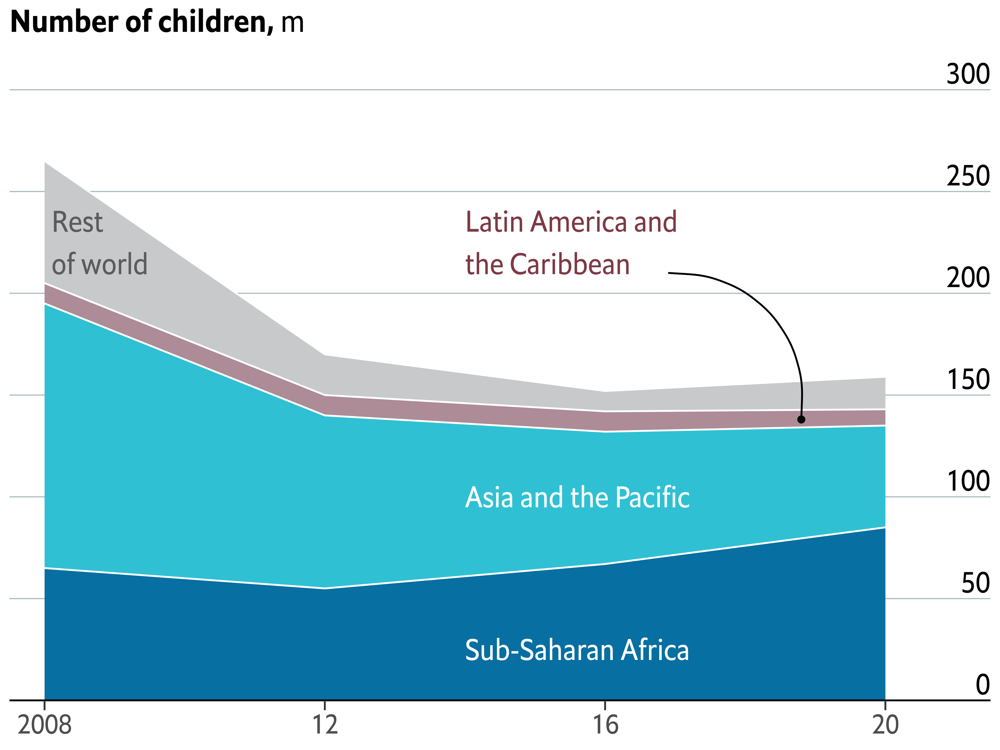
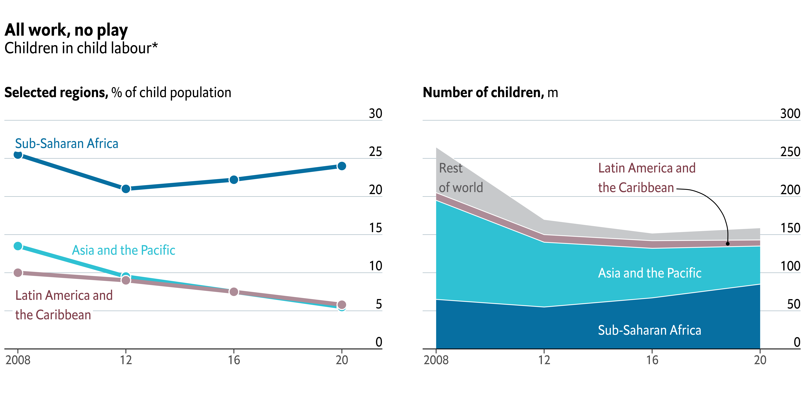
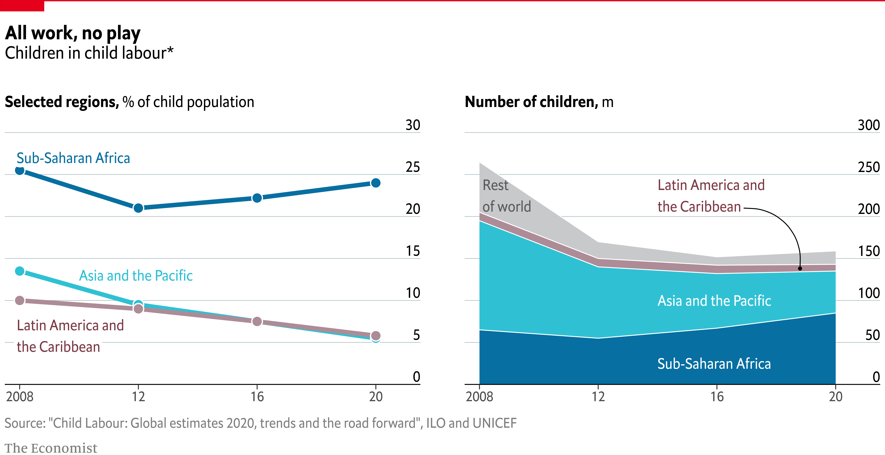

About
This page showcases the work by the data visualization team at The Economist. You can find the original chart in this article.
Thanks to them for all the inspiring and insightful visualizations! Thanks also to Tomás Capretto who replicated the chart in R! 🙏🙏
As a teaser, here is the plot we’re gonna try building:

Load packages
It is possible to think it is not going to be too much work to reproduce today’s chart because, at first sight, there’s nothing that looks very fancy. However, it actually contains several subtle customizations that when added all together make the final result look original and beautiful.
This is article uses several plotting libraries. The first one is shadowtext, a library that allows to draw text with shadows. Then, the popular patchwork, which is going to make the task of combining ggplot2 figures extremely easy. And finally, we’re also going to use the grid library, the drawing library behind the excellent ggplot2 package that we always use.
In addition, other utilities libraries are used: ggtext to draw text with multiple styles very easily, and ggnewscale to use multiple color scales in the same ggplot2 plot.
library(grid)
library(ggnewscale)
library(ggtext)
library(tidyverse)
library(shadowtext)
library(patchwork)Create data
The chart we’re going to reproduce today is made of two separated plots, a line chart and a stacked area chart. These charts use different datasets that are created below:
# First, define colors.
BROWN <- "#AD8C97"
BROWN_DARKER <- "#7d3a46"
GREEN <- "#2FC1D3"
BLUE <- "#076FA1"
GREY <- "#C7C9CB"
GREY_DARKER <- "#5C5B5D"
RED <- "#E3120B"The dataset for the line chart:
regions <- c(
"Sub-Saharan Africa",
"Asia and the Pacific",
"Latin America and the Caribbean"
)
line_data <- data.frame(
year = rep(c(2008, 2012, 2016, 2020), 3),
percent = c(25.5, 21, 22.2, 24, 13.5, 9.5, 7.5, 5.5,10, 9, 7.5, 5.8),
region = factor(rep(regions, each = 4), levels = regions)
)
line_labels<- data.frame(
labels = c("Sub-Saharan Africa", "Asia and the Pacific", "Latin America and\nthe Caribbean"),
x = c(2007.9, 2010, 2007.9),
y = c(27, 13, 5.8),
color = c(BLUE, GREEN, BROWN_DARKER)
)And the dataset for the stacked area chart:
regions <- c(
"Sub-Saharan Africa",
"Asia and the Pacific",
"Latin America and the Caribbean",
"Rest of world"
)
stacked_data <- data.frame(
year = rep(c(2008, 2012, 2016, 2020), 4),
percent = c(65, 55, 67, 85, 130, 85, 65, 50, 10, 10, 10, 8, 60, 20, 10, 16),
region = factor(rep(regions, each = 4), levels = rev(regions))
)
stacked_labels <- data.frame(
labels = c(
"Sub-Saharan Africa",
"Asia and the Pacific",
"Latin America and\nthe Caribbean",
"Rest\nof world"
),
x = c(2014, 2014, 2014, 2008.1),
y = c(25, 100, 225, 225),
color = c("white", "white", BROWN_DARKER, GREY_DARKER)
)Note these values are inferred from the original plot and not something computed from the original data source.
Basic linechart
Let’s get started by creating the line chart first. This is a line chart that has dots drawn on top of it. In ggplot2 this is as easy as adding a call to geom_point() after geom_line() to ensure the dots are on top of the lines.
# Aesthetics defined in the `ggplot()` call are reused in the
# `geom_line()` and `geom_point()` calls.
plt1 <- ggplot(line_data, aes(year, percent)) +
geom_line(aes(color = region), size = 2.4) +
geom_point(
aes(fill = region),
size = 5,
pch = 21, # Type of point that allows us to have both color (border) and fill.
color = "white",
stroke = 1 # The width of the border, i.e. stroke.
) +
# Set values for the color and the fill
scale_color_manual(values = c(BLUE, GREEN, BROWN)) +
scale_fill_manual(values = c(BLUE, GREEN, BROWN)) +
# Do not include any legend
theme(legend.position = "none")
plt1
It’s been a fair start so far! There’s still lot to do! Let’s continue with some layout customizations.
Customize layout
The next step is to customize the layout: change colors, modify axis labels, add grid lines, and many more exciting changes! Let’s do it!
plt1 <- plt1 +
scale_x_continuous(
limits = c(2007.5, 2021.5),
expand = c(0, 0), # The horizontal axis does not extend to either side
breaks = c(2008, 2012, 2016, 2020), # Set custom break locations
labels = c("2008", "12", "16", "20") # And custom labels on those breaks!
) +
scale_y_continuous(
limits = c(0, 32),
breaks = seq(0, 30, by = 5),
expand = c(0, 0)
) +
theme(
# Set background color to white
panel.background = element_rect(fill = "white"),
# Remove all grid lines
panel.grid = element_blank(),
# But add grid lines for the vertical axis, customizing color and size
panel.grid.major.y = element_line(color = "#A8BAC4", size = 0.3),
# Remove tick marks on the vertical axis by setting their length to 0
axis.ticks.length.y = unit(0, "mm"),
# But keep tick marks on horizontal axis
axis.ticks.length.x = unit(2, "mm"),
# Remove the title for both axes
axis.title = element_blank(),
# Only the bottom line of the vertical axis is painted in black
axis.line.x.bottom = element_line(color = "black"),
# Remove labels from the vertical axis
axis.text.y = element_blank(),
# But customize labels for the horizontal axis
axis.text.x = element_text(family = "Econ Sans Cnd", size = 16)
)
plt1
It definitely starts to look very nice! 🤩
Add annotations and title
The chart doesn’t still indicate anything about the regions represented by each line, or the meaning of the vertical axis. It cannot be left like that. This is a good time to improve that!
The following chunk uses both geom_text() and geom_shadowtext(). The first one is used to draw regular text to indicate the values of the horizontal grid lines that serve as a reference. On the other hand, geom_shadowtext() is used to add the labels for the lines. The shadow added covers the horizontal line behind the label for Latin America and the Caribbean region.
In addition, new_scale_color() is used to add a new color scale, the one used for the region labels. Although the colors are the same than those added above, geom_shadowtext() uses a different data set and thus is considered a new color scale.
Finally, the last step is to add a proper title. Note this title mixes bold and regular text, which is very easy thanks to the ggtext package.
# Add labels for the lines
plt1 <- plt1 +
new_scale_color() +
geom_shadowtext(
aes(x, y, label = labels, color = color),
data = line_labels,
hjust = 0, # Align to the left
bg.colour = "white", # Shadow color (or background color)
bg.r = 0.4, # Radius of the background. The higher the value the bigger the shadow.
family = "Econ Sans Cnd",
size = 6
) +
scale_color_identity() # Use the colors in the 'color' variable as they are.
# Add labels for the horizontal lines
plt1 <- plt1 +
geom_text(
data = data.frame(x = 2021.5, y = seq(0, 30, by = 5)),
aes(x, y, label = y),
hjust = 1, # Align to the right
vjust = 0, # Align to the bottom
nudge_y = 32 * 0.01, # The pad is equal to 1% of the vertical range (32 - 0)
family = "Econ Sans Cnd",
size = 6
)
# Add title
plt1 <- plt1 +
labs(
title = "**Selected regions,** % of child population",
) +
theme(
# theme_markdown() is provided by ggtext and means the title contains
# Markdown that should be parsed as such (the '**' symbols)
plot.title = element_markdown(
family = "Econ Sans Cnd",
size = 18
)
)
plt1
Stacked area chart
Thanks to the geom_area() function, it is quite straightforward to create a stacked area chart in ggplot2.
plt2 <- ggplot(stacked_data) +
geom_area(aes(year, percent, fill = region), color = "white") +
scale_fill_manual(values = c(GREY, BROWN, GREEN, BLUE)) +
theme(legend.position = "None")
plt2
Customize layout
plt2 <- plt2 +
scale_x_continuous(
limits = c(2007.5, 2021.5),
expand = c(0, 0),
breaks = c(2008, 2012, 2016, 2020),
labels = c("2008", "12", "16", "20")
) +
scale_y_continuous(
limits = c(0, 320),
breaks = seq(0, 300, by = 50),
expand = c(0, 0)
) +
theme(
# Set background color to white
panel.background = element_rect(fill = "white"),
# Remove all grid lines
panel.grid = element_blank(),
# But add grid lines for the vertical axis, customizing color and size
panel.grid.major.y = element_line(color = "#A8BAC4", size = 0.3),
# Remove tick marks by setting their length to 0
axis.ticks.length.y = unit(0, "mm"),
axis.ticks.length.x = unit(2, "mm"),
# Remove the title for both axes
axis.title = element_blank(),
# Only bottom line of the vertical axis is painted in black
axis.line.x.bottom = element_line(color = "black"),
# Remove labels from the vertical axis
axis.text.y = element_blank(),
# But customize labels for the horizontal axis
axis.text.x = element_text(family = "Econ Sans Cnd", size = 16)
)
plt2
Add labels and annotations
plt2 <- plt2 +
geom_text(
aes(x, y, label = labels, color = color),
data = stacked_labels,
hjust = 0,
vjust = 0.5,
family = "Econ Sans Cnd",
size = 6,
inherit.aes = FALSE
) +
scale_color_identity()
plt2 <- plt2 +
geom_text(
data = data.frame(x = 2021.5, y = seq(0, 300, by = 50)),
aes(x, y, label = y),
hjust = 1,
vjust = 0,
nudge_y = 300 * 0.01, # Again, the pad is equal to 1% of the vertical range.
family = "Econ Sans Cnd",
size = 6,
inherit.aes = FALSE
)
plt2 <- plt2 +
geom_curve(
aes(x = x, y = y, xend = xend, yend = yend),
data = data.frame(x = 2016.9, y = 210, xend = 2018.8, yend = 138),
curvature = -0.5,
angle = 90
) +
geom_point(
aes(x, y),
data = data.frame(x = 2018.8, y = 138),
color = "black"
)
plt2 <- plt2 +
labs(
title = "**Number of children,** m",
) +
theme(
plot.title = element_markdown(
family = "Econ Sans Cnd",
size = 18
)
)
plt2
Combine charts
plt1 <- plt1 + theme(plot.margin = margin(0, 0.05, 0, 0, "npc"))
plt2 <- plt2 + theme(plot.margin = margin(0, 0, 0.05, 0, "npc"))
plt <- plt1 | plt2
title_theme <- theme(
plot.title = element_text(
family = "Econ Sans Cnd",
face = "bold",
size = 22,
margin = margin(0.8, 0, 0, 0, "npc")
),
plot.subtitle = element_text(
family = "Econ Sans Cnd",
size = 20,
margin = margin(0.4, 0, 0, 0, "npc")
)
)
plt <- plt + plot_annotation(
title = "All work, no play",
subtitle = "Children in child labour*",
theme = title_theme
) +
theme(
plot.margin = margin(0.075, 0, 0.1, 0, "npc"),
)
plt
Add final annotations with the grid library
plt
grid.lines(
x = c(0, 1),
y = 1,
gp = gpar(col = "#e5001c", lwd = 4)
)
# Add rectangle on top-left
# lwd = 0 means the rectangle does not have an outer line
# 'just' gives the horizontal and vertical justification
grid.rect(
x = 0,
y = 1,
width = 0.05,
height = 0.025,
just = c("left", "top"),
gp = gpar(fill = "#e5001c", lwd = 0)
)
grid.text(
'Source: "Child Labour: Global estimates 2020, trends and the road forward", ILO and UNICEF',
x = 0.005,
y = 0.06,
just = c("left", "bottom"),
gp = gpar(
col = "grey50",
fontsize = 16,
fontfamily = "Econ Sans Cnd"
)
)
grid.text(
"The Economist",
x = 0.005,
y = 0.005,
just = c("left", "bottom"),
gp = gpar(
col = "grey50",
fontsize = 16,
fontfamily = "Milo TE W01"
)
)
The extra mile
If you are attentive to the smallest of the details you may have noticed the titles in the chart above aren’t aligned exactly in the same way than the titles in the original chart.
By default, ggplot2 aligns titles using the panel region as reference. We asked ggplot2 to use the plot region as reference when we added plot.title.position = "plot" in the theme() call. But it was not enought. The title is not completely aligned to the left border of the chart, which you can notice by comparing the position of the rectangle on top with the titles.
This extra step consists of removing the titles generated with ggplot2 and replacing them with text drawn with the grix.text() function.